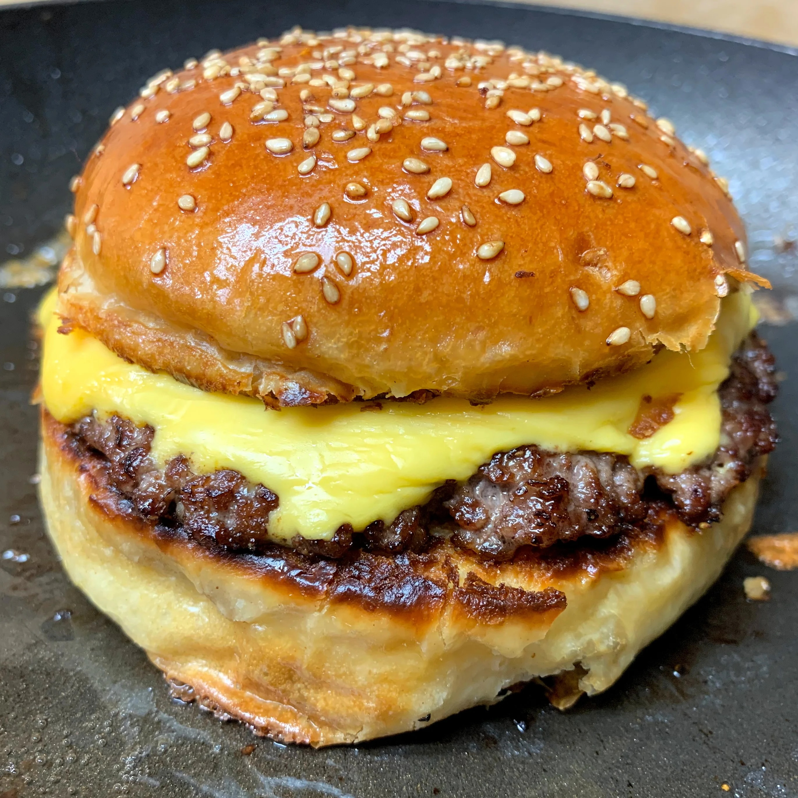

Wood Burger

Description
These are called Wood burgers outta necessity. These things just got a big block of wood sitting right on top. The secret to a wood burger is you keep it simple. All it needs is cheese. One big hunk of cheese right on the top of that little rascal. Then you top it with BBQ sauce and you're ready to go. The best things in life are simple. And all that raw cheese leaves your insides feeling nice and mellow come morning. Let's get into it.
Ingredients
- 1 lb Ground Beef
- 1 Block Sharp Cheddar
- Salt and Pepper
- BBQ Sauce
- Oil
- Heat and oil your grill to medium heat
- Shape your burgers. Season each one with salt and pepper
- Throw them on the grill. 4 minutes per side for medium. Take them off the grill and let them rest for 5-10 minutes.
- Cut your block of cheese into big, thick slices
- Top each burger with a slice of cheese and a little squirt of BBQ sauce.
- Enjoy. Stay Golden.